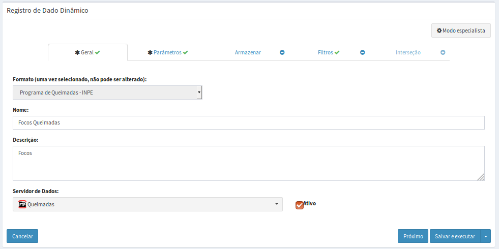
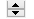

Dado de Ocorrência
Os dados dinâmicos do tipo Ocorrências podem ser oriundos de diversas fontes como apresentado acima. Para facilitar o seu uso foi incluído a leitura desses dados nos seguintes formatos:
- Ocorrência - Prog. de Queimadas / INPE: arquivos ASCII de pontos com uma sintaxe específica do projeto de Queimadas do INPE.
- Ocorrência – Prog. de Raios / INPE: arquivos ASCII de pontos com uma sintaxe específica do projeto do ELAT/INPE.
- Ocorrência – CSV customizável: arquivos ASCII de pontos com uma sintaxe configurável para qualquer arquivo texto.
- Ocorrência - PostGIS: esta opção requer que os dados de pontos de ocorrência estejam em uma tabela de um sistema gerenciador de banco de dados PostgreSQL + PostGIS.
- Arquivos Vetoriais (ESRI Shapefile): Arquivos no formato Shape-File podem armazenar dados de ocorrência. O dado pode ser de geometrias de pontos, linhas ou polígonos e cada geometria tem de ter um atributo com a data e hora em que foi criado. Nos nomes dos arquivos também deve ter a máscara com a data e hora de criação.
- Evento de Queimada (ESRI Shapefile): Dados do projeto de queimadas do INPE no formato Shape-File podem ser utilizados como dados dinâmicos de ocorrências. A diferença da opção acima é que aqui alguns parâmetros já são pré-definidos por ser específico desse projeto.
ADICIONANDO DADO DINÂMICO - OCORRÊNCIA:
Para adicionar um novo dado dinâmico do tipo Ocorrência é necessário ter um projeto ativo. No menu de opções selecione “ Dados Dinâmicos” para que a lista de dados disponíveis seja apresentada na área de trabalho. Clique no botão “ + “ para adicionar novo dado. Preencha os dados para formato escolhido e utilize o botão “Salvar” para salvar o dado dinâmico. Não é permitido nomes de dados em duplicidade. Botão “Cancelar” volta à tela anterior sem salvar o dado. A Figura 2.21 mostra a área de trabalho para adicionar novo dado dinâmico. Detalhes de cada campo a seguir.

Figura 2.21 – Módulo de Administração: Adição de dado dinâmico – Ocorrência
Registro de Dado Dinâmico - Geral:
- Formato: Escolha o tipo entre “Ocorrência - Prog. de Queimadas / INPE”, “Ocorrência – Prog. de Raios / INPE”, “Ocorrência – PostGIS” ou “Ocorrência – CSV customizável”, para dados de ocorrências. Dependendo do tipo escolhido alguns parâmetros específicos serão apresentados para preenchimento. IMPORTANTE: Uma vez escolhido não pode ser alterado, a menos que saia da edição e retorne.
- Nome: Defina o nome do dado dinâmico (campo obrigatório para passar para os demais itens). O tamanho máximo do nome é de 100 caracteres. Não é permitido nomes duplicados.
- Descrição: Campo não obrigatório para descrição do dado dinâmico. O tamanho máximo da senha é de 250 caracteres.
- Servidor de Dados: Escolha o servidor de onde serão coletados ou apenas acessado os dados. Se na forma de arquivos remotos a serem transferidos escolha servidores do tipo FTP ou HTTP/HTTPS. Se na forma de arquivos locais a serem coletados escolha servidores do tipo ARQUIVO. Se tabelas em bancos de dados locais escolha servidores do tipo PostGIS.
- Ativo: Botão ativo permite coletar o dado dinâmico em questão e que está associado ao servidor escolhido acima. Botão desmarcado nenhuma coleta será realizada.
Registro de Dado Dinâmico - Parâmetros:
Utilize os parâmetros dessa aba para informar a máscara dos arquivos que serão coletados ou uma tabela de banco de dados que contém os dados de ocorrência.
- Máscara: Máscara do nome dos arquivos a serem coletados. Esta máscara utiliza partes constantes para capturar prefixos utilizados nos nomes dos arquivos e sequências especiais para indicar ao sistema como interpretar informações de data e hora contidas nos nomes dos arquivos. Para data com ano, mês e dia utilize %YYYY para anos de 4 dígitos ou %YY para anos de 2 dígitos, %MM para mês e %DD para dia. Para data com ano e dia juliano utilize %YYYY para anos de 4 dígitos ou %YY para anos de 2 dígitos e %JJJ para o dia juliano. Para valores de hora utilize %hh para hora, %mm para minutos e %ss para segundos. Caracteres que não mudam podem ser mantidos ou substituídos por * (asterisco). Se os arquivos estiverem em sub-diretórios definido a partir do caminho informado na definição do servidor, acrescente estes subdiretórios na frente da máscara (por exemplo: queimadas/goes13/FOCOS_Q%YYYY%MM%DD_%hh%mm%ss.txt ). Mais detalhes veja aqui.
- Fuso Horário (somente para formato CSV): Fuso horário do local onde o dado dinâmico foi gerado. Esse parâmetro garante que as datas e horas dos dados coletados se mantenham consistentes com a base de dados. Dados em horário GMT devem utilizar o valor 0.
- Projeção (SRID) (somente para formato CVS): Valor numérico dos parâmetros de projeção e datum dos dados a serem coletados. Veja os principais valores utilizados no anexo A1.
NOTA: Para os dados de ocorrência de focos de queimadas e de descargas elétricas do INPE são assumidos que o valor de Fuso horário é igual a 0 (horário GMT) e Projeção SRID igual a 4326 (Latitude/Longitude em WGS84).
Para dados de ocorrência que estão disponíveis em um sistema gerenciador de banco de dados PostgreSQL + PostGIS, deve fornecer o nome da tabela uma vez que o servidor foi definido na aba “Geral”, o atributo da tabela que contém a data e hora, e ainda o atributo que contém a coluna geométrica.
- Nome da Tabela: Digite ou escolha o nome da tabela que contém os dados de ocorrência.
- Propriedade de tempo: Digite o nome do atributo da tabela que contém os dados de data e hora das ocorrências. Esse atributo deve ser do tipo “timestamp” com “timezome”.
- Propriedade geométrica: Digite o nome do atributo da tabela que contém os dados de geometria das ocorrências. Esse atributo deve ser do tipo “POINT”.
Registro de Dado Dinâmico – Formato do CSV:
Esta aba somente será apresentada quando o formato do dado dinâmico escolhido na aba Geral for a opção “Ocorrência – CSV customizável”. Esta opção permite que seja configurado a leitura de arquivos CSV com diferentes configurações internas, portanto, antes de iniciar esta aba tenha em mãos uma cópia de um arquivo que será lido. Basicamente é solicitado quantas linhas de cabeçalho e qual delas identifica os atributos, se a maioria dos atributos foram de um tipo (inteiro, real ou texto) poderá converter todos de uma única vez e aqueles atributos diferente de todos devem ser configurados numa lista. Nesta lista, obrigatoriamente, um atributo com a data/hora das ocorrências, e um segundo com localização das ocorrências definida obrigatoriamente por um par de atributos (longitude e latitude) devem ser configurados. Veja a seguir a manipulação dos campos dessa aba.
- Número de Linhas do cabeçalho: Digite o número de linhas que o arquivo CSV tem.
- Linha com nome dos atributos: Digite o número da linha que contém o cabeçalho.
- Converter todos: Utilize esta opção para converter todos atributos para um tipo padrão. Aqueles campos que forem diferentes do tipo padrão deverão ser incluídos na “Atributos a Serem Convertidos”. Caso não marque esta opção, somente os atributos fornecidos pela lista serão lidos e inseridos no banco.
- Tipo padrão: Escolha uma das opções entre “Ponto flutuante” para números reais, “Inteiro” para inteiro ou “Texto” para conjunto de caracteres.
- Atributos a Serem Convertidos: Uma lista deverá ser criada exclusivamente para aqueles atributos diferentes do tipo padrão escolhido acima. É obrigatório configurar o atributo que identifica a data e hora das ocorrências, assim como os atributos que definem a geometria do pondo de ocorrência, disponíveis na lista. Utilize o botão “Adicionar” para incluir outros itens na lista. Utilize o botão “Remover” em um item da lista para removê-lo.
- Tipo: Escolha uma das opções entre “Ponto (Geometria)” para definir o par de atributos que definem a geometria das ocorrências, “Ponto flutuante” para números reais, “Inteiro” para inteiro, “Texto” para conjunto de caracteres ou “Data” para o campo com a data e hora em que foi realizada a ocorrência.
- Nome do atributo: Informe o nome do atributo que será lido. Para o atributo do tipo “Data” obrigatório, os valores no arquivo CSV podem estar num único atributo ou em mais do que um atributo. Neste último caso os nomes dos atributos devem ser informados e separados por vírgulas.
- Latitude (somente para tipo Ponto (Geometria)): Indique o nome de uma coluna que informa o valor de latitude (em graus decimais) ou coordenada Y em metros.
- Longitude (somente para tipo Ponto (Geometria)): Indique o nome de uma coluna que informa o valor de longitude (em graus decimais) ou coordenada X em metros.
- Formato (somente para tipo “Data”): Informe a máscara da data/hora a ser lida. Para data com ano, mês e dia utilize %YYYY para anos de 4 dígitos ou %YY para anos de 2 dígitos, %MM para mês e %DD para dia. Para data com ano e dia juliano utilize %YYYY para anos de 4 dígitos ou %YY para anos de 2 dígitos e %JJJ para o dia juliano. Para valores de hora utilize %hh para hora, %mm para minutos e %ss para segundos.
- Pseudônimo: Informe o nome do atributo a ser criado na tabela de dados. Utilize nome simples, sem acentuações ou caracteres especiais e em letras minúsculas.
- “Adicionar”: Clique para incluir o item na lista.
Registro de Dado Dinâmico – Armazenar  :
:
Utilize os parâmetros dessa aba quando necessário armazenar os dados coletados de servidores remotos ou quando deseja-se converter para um formato diferente em servidor local. A plataforma pode utilizar o dado disponível no servidor de banco de dados, neste caso, os parâmetros na aba “Armazenar” não devem ser preenchidos.
- Formato de saída: Escolha o formato de saída. Para dados dinâmicos de ocorrência escolha “Ocorrência PostGIS”.
- Armazenar Dados: Servidor de dados que irá armazenar dados coletados. Se formato acima for “Ocorrência PostGIS” somente servidores PostGIS estarão disponíveis.
- Serviço: Escolha o serviço de coleta a ser utilizado.
- Nome da tabela (somente para formato de saída “Ocorrência PostGIS”): Forneça um nome da tabela para armazenar as ocorrências coletadas.
- Propriedade de tempo (somente para formato de saída “Ocorrência PostGIS”): Nome da coluna para armazenar a data/hora da ocorrência. Será criada uma coluna do tipo “timestamp com timezone”
- Propriedade geométrica (somente para formato de saída “Ocorrência PostGIS”): Nome da coluna para armazenar a geometria dos pontos de ocorrência. Será criado um atributo com geometria do tipo “POINT”.
- Armazenar
 - Agendamento: Nesta seção o usuário deve definir quando será executada a coleta e o armazenamento se houver.
- Agendamento: Nesta seção o usuário deve definir quando será executada a coleta e o armazenamento se houver. - Tipo: Escolha tipo “Manual” ou “Agendamento”. Se opção “Manual” a coleta e armazenamento só será realizada se o usuário utilizar o botão “Salvar e executar” ou ainda na lista de dados dinâmicos o botão “ Executar” do item desejado. Se opção “Agendamento” preencha os campos abaixo.
- Unidade de tempo (somente se Tipo for “Agendamento”): Escolha um item entre “Segundos, Minutos, Horas e Semanalmente”.
- Frequência (somente se Unidade de tempo for “Segundos, Minutos ou Horas”): Digite um valor de um número inteiro.
- Tempo Inicial
 (somente se Unidade de tempo for Segundos, Minutos ou Horas): Clique no campo para escolher o valor de hora, minuto e segundo que será utilizado como referência para executada a coleta e armazenamento do dado dinâmico.
(somente se Unidade de tempo for Segundos, Minutos ou Horas): Clique no campo para escolher o valor de hora, minuto e segundo que será utilizado como referência para executada a coleta e armazenamento do dado dinâmico. - Agendamento (somente se Unidade de tempo for “Semanalmente”): escolha uma das opções entre “Domingo, Segunda-feira, Terça-feira, Quarta-feira, Quinta-Feira, Sexta-feira e Sábado”
- Hora
 (somente se Unidade de tempo for Semanalmente): clique no campo para escolher o valor de hora, minuto e segundo que será executada a coleta e armazenamento do dado dinâmico.
(somente se Unidade de tempo for Semanalmente): clique no campo para escolher o valor de hora, minuto e segundo que será executada a coleta e armazenamento do dado dinâmico.
Registro de Dado Dinâmico – Filtrar  :
:
Utilize os parâmetros dessa aba para limitar o período (início e fim) da coleta de um dado em servidor ou executar um recorte na área do dado e ser coletado.
- Filtrar - Data (horário GMT): Nessa seção o usuário pode definir uma data/hora inicial e final para coletar dados. O valor digitado refere-se ao horário GMT em ambos os campos.
- Ignorar dados anteriores a
 : Clique no campo para escolher a data e hora que será utilizado como referência para não coletar dados dinâmicos anteriores a escolha. O início da coleta será na data/hora maior e igual ao valor digitado. Os mais arquivos disponíveis também serão coletados na primeira vez que for executada a coleta até a data/hora informada em “Ignorar dados após” ou se não informado até quando existir arquivos disponíveis. Ao coletar o último dado o sistema armazena a data/hora do mesmo para que na próxima coleta não repita a coleta. A próxima tentativa de coleta será realizada em função do agendamento definido acima. Note que não será possível coletar dados anteriores a data/hora informada nesse campo, portanto, não terá efeito caso altere este valor após a primeira coleta.
: Clique no campo para escolher a data e hora que será utilizado como referência para não coletar dados dinâmicos anteriores a escolha. O início da coleta será na data/hora maior e igual ao valor digitado. Os mais arquivos disponíveis também serão coletados na primeira vez que for executada a coleta até a data/hora informada em “Ignorar dados após” ou se não informado até quando existir arquivos disponíveis. Ao coletar o último dado o sistema armazena a data/hora do mesmo para que na próxima coleta não repita a coleta. A próxima tentativa de coleta será realizada em função do agendamento definido acima. Note que não será possível coletar dados anteriores a data/hora informada nesse campo, portanto, não terá efeito caso altere este valor após a primeira coleta. - Ignorar dados após
 : Clique no campo para escolher a data e hora que será utilizado como referência para não coletar dados dinâmicos posterior a escolha. Deixe em branco este campo se desejar coletar os dados de forma contínua. Se informado a data/hora final serão coletados os dados menores e iguais ao valor.
: Clique no campo para escolher a data e hora que será utilizado como referência para não coletar dados dinâmicos posterior a escolha. Deixe em branco este campo se desejar coletar os dados de forma contínua. Se informado a data/hora final serão coletados os dados menores e iguais ao valor.
DICA: O servidor de dados pode ter um volume grande de dados históricos disponível na pasta onde será coletado os dados, portanto, se for definir um novo dado dinâmico que interessa somente a partir da data/hora atual, utilize o filtro para “Ignorar dados anteriores a”.
- Filtrar
 - Área: Nessa seção o usuário deve definir um recorte espacial nos dados dinâmicos de Ocorrência para armazenar somente os pontos que estiverem dentro uma área de interesse.
- Área: Nessa seção o usuário deve definir um recorte espacial nos dados dinâmicos de Ocorrência para armazenar somente os pontos que estiverem dentro uma área de interesse. - Selecionar o tipo de filtro por área: Por padrão a opção “Não filtrar” não aplica nenhum recorte aos dados. Escolha “Filtrar por limites” ou “Filtrar por dado estático”. Para “Filtrar por limites” defina um as coordenadas de dois pontos, sendo o primeiro (mín) inferior esquerdo e o segundo (max) superior direito. Para “Filtrar por dado estático” cadastre previamente um dado estático vetorial com um ou mais polígonos que serão utilizados para recortar a(s) área(s) de interesse.
- X min (somente para “Filtrar por limites”): Digite o valor mais a esquerda da área a recortar. Valor depende do sistema de projeção utilizado.
- Y min (somente para “Filtrar por limites”): Digite o valor mais abaixo da área a recortar. Valor depende do sistema de projeção utilizado.
- X max (somente para “Filtrar por limites”): Digite o valor mais à direita da área a recortar. Valor depende do sistema de projeção utilizado.
- Y max (somente para “Filtrar por limites”): Digite o valor ponto mais acima da área a recortar. Valor depende do sistema de projeção utilizado.
- Projeção SRID (somente para “Filtrar por limites”): Valor numérico dos parâmetros de projeção e datum a ser utilizado pelo par de coordenadas acima. Veja os principais valores utilizados no anexo A1.
Exemplo: Para sistemas de coordenadas geográficas utilize os valores em graus decimais (-23.43, –45.22) para longitude e latitude, e para sistema de coordenadas projetados utilize os valores em metros (345455.32, 7455432.43).
- Séries de Dados (somente para Filtrar por dado estático): Escolha o mapa que contém um dado estático vetorial de polígonos que deverão incluir os pontos de ocorrências internos ao(s) polígono(s).
Registro de Dado Dinâmico – Interseção  :
:
Além dos atributos que normalmente serão coletados de cada série de dados dinâmicos de ocorrências, durante a coleta é possível adicionar novos atributos aos pontos resultantes da interseção espacial com um dado estático vetorial de polígonos ou matricial, assim como um dado dinâmico matricial, seja de observação ou previsão numérica. Neste caso, o valor do pixel da grade será incluído como mais um atributo dos pontos coletados.
- + : Clique no botão para adicionar um plano de interseção. Uma janela será apresentada para escolher qual dado estático ou dinâmico será utilizado.
- ⮧ Dado Estático: Clique para abrir a lista de dados estáticos a escolher. Note que uma vez escolhido o mesmo será retirado dessa lista. A lista de dados escolhidos fica disponível na área de trabalho.
- ⮧ Dado Dinâmico: Clique para abrir a lista de dados dinâmicos a escolher. Note que uma vez escolhido o mesmo será retirado dessa lista. A lista de dados escolhidos fica disponível na área de trabalho.
Após selecionar um dado dinâmico matricial é necessário informar qual ou quais bandas (ou camadas) devem ser utilizadas para cruzar com a localização das ocorrências. Mesmo que o dado matricial tenha apenas uma banda deve ser informado a de número 0. Se um dado estático vetorial com geometria de polígonos for selecionado, pode-se escolher um ou mais atributos para ser atribuído as ocorrências. Clique no botão “Atributos” de cada dado dinâmico ou estático para informar os campos a seguir:
- Selecione Atributos (se dado dinâmico matricial): Clique no botão para informar quais bandas (ou camadas) serão utilizadas para recuperar o valor do “pixel”. Lembre-se que as bandas são numeradas a partir da banda zero (0).
- Banda: Digite o número da banda ou utilize o botão para escolher o valor. Clique em + para cada valor de banda digitado. A lista de dados escolhidos fica disponível na área de trabalho.
- Selecione Atributos (se dado estático): Clique no botão para informar quais atributos do mapa de polígonos serão utilizadas para agregar informações as ocorrências. Lembre-se que as bandas são numeradas a partir da banda zero (0).
- Atributos: Clique no campo em branco para escolher os atributos do dado estático que serão utilizadas para adicionar atributos as ocorrências.
- Pseudônimo: Se desejado altere o conteúdo desse campo que inicialmente carrega o conteúdo escolhido acima. Será o conteúdo do pseudônimo a ser utilizado para o nome dos atributos a serem criados na tabela de ocorrências.